%%Listing 7.1. specsin0.m naive and deceptive spectrum of a sine wave via the FFT f =100; Ts=1/1000; time=5.0; % freq, sampling interval, time t=Ts : Ts : time ; % define a time vector w=sin (2* pi* f *t ) ; % define the sinusoid N=2^10; % size of analysis window fw=abs(fft(w(1:N))); % find magnitude of DFT/FFT plot(fw) % plot the waveform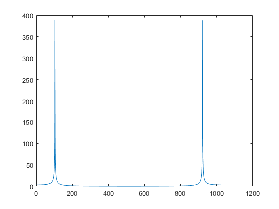
%%Listing 7.2. specsin1.m spectrum of a sine wave via the FFT/DFT f =100; Ts=1/1000; time =5.0; % freq , sampling interval, time t=Ts:Ts:time ; % define a time vector w=sin(2*pi*f*t ) ; % define the s inuso id N=2^10; % size of analysis window ssf =(0:N/2-1)/(Ts*N) ; % frequency vector fw=abs(fft(w(1:N))) ; % find magnitude of DFT/FFT plot(ssf, fw(1:N/2)) % plot for positive freq only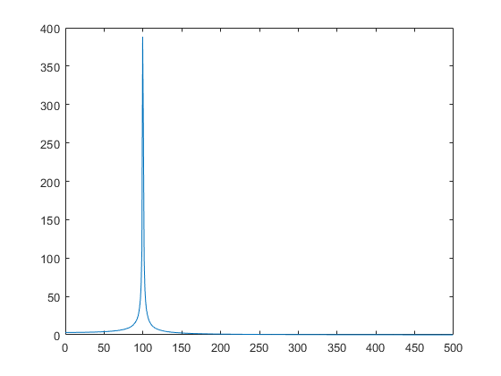
%%Listing 7.3. specsin2.m spectrum of a sine wave via the FFT/DFT f=100; Ts=1/1000; time=10.0; % freq , sampling interval, time t=Ts : Ts : time ; % define a time vector w=sin (2* pi* f *t ) ; % define the sinusoid N=2^10; % size of analyis window ssf=(-N/2:N/2-1)/(Ts*N) ; % frequency vector fw=fft(w( 1 :N) ) ; % do DFT/FFT fws=fftshift( fw ) ; % shiftit for plotting plot ( ssf, abs( fws )) % plot magnitude spectrum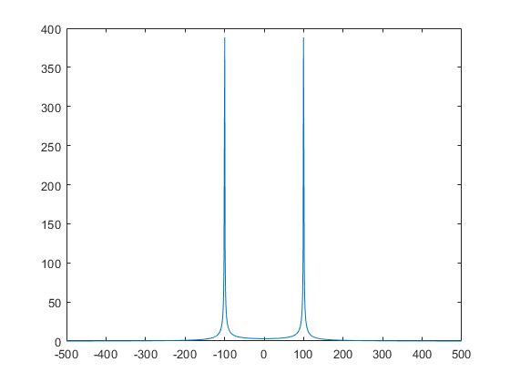
%%Exercise 7.5. % Explore the limits of the FFT/DFT technique by choosing % extreme values. What happens in the following cases? % a. f becomes too large. Try f = 200, 300, 450, 550, 600, 800, 2200 Hz. Comment % on the relationship between f and Ts. freqs = [100, 200,300,350,550,600,800,2200]; figure(1) for i = 1:8 subplot(2,4,i) f=freqs(i); Ts=1/1000; time=10.0; % freq , sampling interval, time t=Ts : Ts : time ; % define a time vector w=sin (2* pi* f *t ) ; % define the sinusoid N=2^10; % size of analyis window ssf=(-N/2:N/2-1)/(Ts*N) ; % frequency vector fw=fft(w( 1 :N) ) ; % do DFT/FFT fws=fftshift( fw ) ; % shiftit for plotting plot ( ssf, abs( fws )) % plot magnitude spectrum title(sprintf("F = %iHz",f)) end % We can observe how the correct frequency is no longer identified in the % plot after the sinusoid's frequency passes half of the sampling frequency % (1000 Hz.) In these cases, aliasing has occured, and the frequency peak has % "wrapped around," causing the frequency to be shown as 1000Hz - f.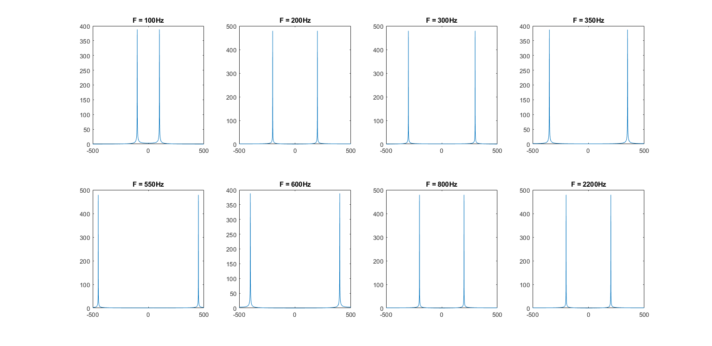
b. Ts becomes too large. Try Ts = 1/500, 1/250, 1/50. Comment on the relationship between f and Ts. (You may have to increase time in order to have enough samples to operate on.)
Ts_s = [1/1000, 1/500, 1/250, 1/50]; figure(1) for i = 1:4 subplot(2,2,i) f=100; Ts=Ts_s(i); time=100.0; % freq , sampling interval, time t=Ts : Ts : time ; % define a time vector w=sin (2* pi* f *t ) ; % define the sinusoid N=2^10; % size of analyis window ssf=(-N/2:N/2-1)/(Ts*N) ; % frequency vector fw=fft(w( 1 :N) ) ; % do DFT/FFT fws=fftshift( fw ) ; % shiftit for plotting plot ( ssf, abs( fws )) % plot magnitude spectrum title(sprintf("Fs = %iHz",1/Ts)) end % This case is very similar to what happens when the frequency is increased % past the Nyquist sampling rate of half the sampling frequency. In the % last case, the signal's frequency is a multiple of the sampling % frequency, so the signal is sampled at the same place every cycle, % resulting in a sampled signal with no frequency componants. This explains % why the only information the frequency spectrum plot has to show is very % low amplitude noise.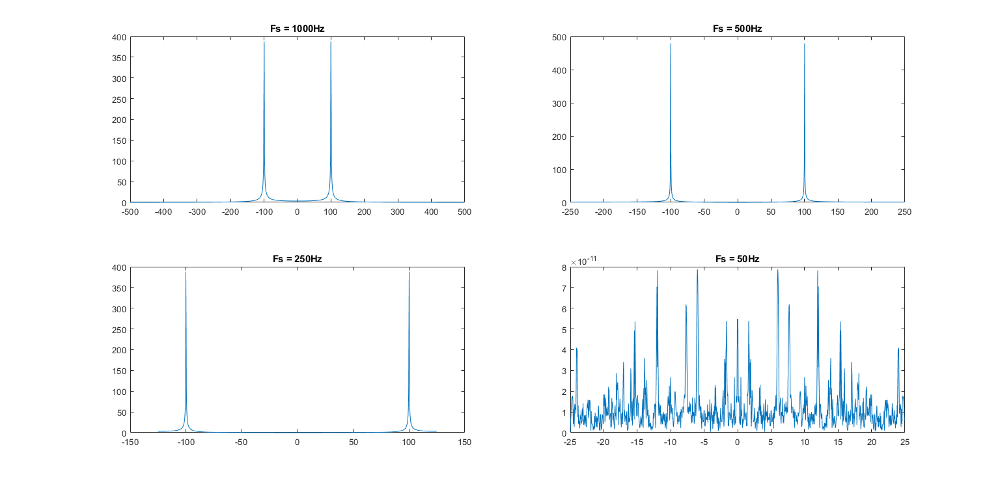
c. N becomes too large or too small. What happens to the location in the peak of the magnitude spectrum when N = 2^11, 2^14, 2^8, 2^4, 2^2, 2^20? What happens to the width of the peak in each of these cases? (You may have to increase time in order to have enough samples to operate on.)
Ns = [2^10, 2^11, 2^14, 2^8, 2^4, 2^2, 2^20]; figure(2) for i = 1:7 subplot(2,4,i) f=100; Ts=1/1000; time=2000.0; % freq , sampling interval, time t=Ts : Ts : time ; % define a time vector w=sin (2* pi* f *t ) ; % define the sinusoid N=Ns(i); % size of analyis window ssf=(-N/2:N/2-1)/(Ts*N) ; % frequency vector fw=fft(w( 1 :N) ) ; % do DFT/FFT fws=fftshift( fw ) ; % shiftit for plotting plot ( ssf, abs( fws )) % plot magnitude spectrum title(sprintf("N = 2**%i bins",log(N)/log(2))) end %When the number of frequency bins N used in the transform is too small, %the peaks get very wide and have a much smaller magnitude. This is because %the frequency spectrum outputed by the discrete fourier transform is %forced to give the average amplitude of all the signal's frequency %componants represented by the range around each bin, and so if the bin is %is wider, there will be more frequencies between successive bins which %results in a wider peak, and also the magnitude of the peak will be %reduced by the extra zero frequency components also lumped into the same %bin, driving down the average. % When the number of bins is very high, the peak's magnitude gets very % large. I think this is because the closer the bin's width gets to being % infinitely small (a continuous instead of discrete transform) the closer % the frequency response gets to showing an impulse at the frequency which % the sinusoid occupies. One problem with having such a large number of % bins is that it requires a much longer time to sample the signal in order % to operate, which may be impractical for a real-time communication % system. %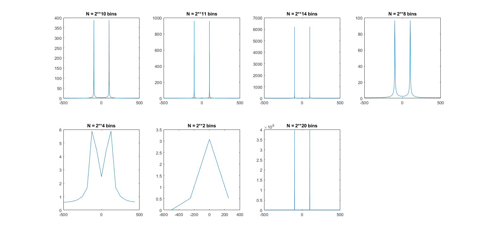
%%Exercise 7.6. Replace the sin function with sin^2. Use w=sin(2*pi*f*t).ˆ2. What % is the spectrum of sin^2? What is the spectrum of sin3? Consider sink.What is the % largest k for which the results make sense? Explain what limitations there are. figure(3) freq_pows = [1,2,3,4,5,6,7]; for i = 1:7 subplot(1,7,i), f=100; Ts=1/1000; time=10.0; % freq , sampling interval, time t=Ts : Ts : time ; % define a time vector w=sin(2*pi*f*t).^freq_pows(i); % define the sinusoid N=2^10; % size of analyis window ssf=(-N/2:N/2-1)/(Ts*N) ; % frequency vector fw=fft(w( 1 :N) ) ; % do DFT/FFT fws=fftshift( fw ) ; % shiftit for plottingplot ( ssf, abs( fws )) % plot magnitude spectrum plot ( ssf, abs( fws )) % plot magnitude spectrum title(sprintf("sin^%i()",i)) end %in my view, the easiest way to explain the frequency spectra of sin^k() %is that each multiplication by sin() is the same as convoluting the %function's frequency response with the twin impluses of the frequency %response of sin(). The first time this happens (for sin^2()) it has the %effect of offsetting the frequency spectrum's peaks at -100 and +100 Hz %another 100Hz away from the origin where only one peak from each signal %overlaps, as well as adding DC frequency component where the two identical %signals perfectly match. % %Another way of looking at it is that every succesive multiplicate by sin() %adds another frequency component 100Hz (or whatever the initial sinusoid's %frequency was) higher than the last signal and alternates whether or not %the function is even or odd. Because the frequency spectrum is always %increasing by F, this process eventually breaks down when aliasing starts %occuring, although in this case because sinusoid's frequency is a multiple %of the sampling frequency, the higher frequency componants overlap with %their lower harmonics.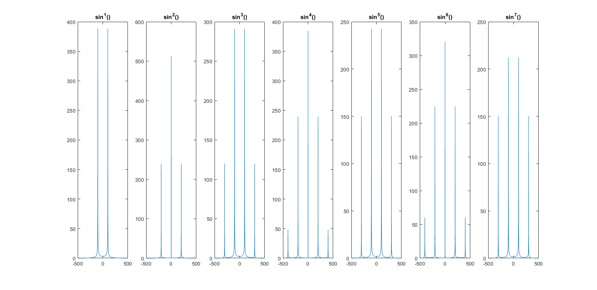
%%Exercise 7.7. Replace the sin function with sinc. What is the spectrum of the % sinc function? What is the spectrum of sinc2? figure(4) freq_pows = [1,2]; for i = 1:2 subplot(2,2,i), f=100; Ts=1/1000; time=10.0; % freq , sampling interval, time t=(Ts: Ts : time); % define a time vector w_s=sinc(2*pi*f*t).^freq_pows(i); % define the sinusoid N=2^10; % size of analyis window ssf=(-N/2:N/2-1)/(Ts*N) ; % frequency vector fw=fft(w_s( 1 :N) ) ; % do DFT/FFT fws=fftshift( fw ) ; % shift it for plottingplot ( ssf, abs( fws )) % plot magnitude spectrum plot ( ssf, abs( fws )) % plot magnitude spectrum title(sprintf("sinc^%i(), t=[0.001,10]",i)) end freq_pows = [1,2]; for i = 1:2 subplot(2,2,i+2), f=100; Ts=1/1000; time=10.0; % freq , sampling interval, time t=(-0.1: Ts : time); % define a time vector w_s=sinc(2*pi*f*t).^freq_pows(i); % define the sinusoid N=2^10; % size of analyis window ssf=(-N/2:N/2-1)/(Ts*N) ; % frequency vector fw=fft(w_s( 1 :N) ) ; % do DFT/FFT fws=fftshift( fw ) ; % shift it for plottingplot ( ssf, abs( fws )) % plot magnitude spectrum plot ( ssf, abs( fws )) % plot magnitude spectrum title(sprintf("sinc^%i(), t=[-0.1,10]",i)) end %Mathematically, fourier transform of the sinc function ought to be a %rect() function, and the transform of the sinc^2 function ought to be a %triangle function. However, when I plot these functions the way the book's %example code plots the sin function, I get severely distorted versions of %those shapes in the frequency domain, which does not seem to be caused by %the sampling rate or time over which the function is evaluated. The only %way I could find to make the frequency domain plot look the right way was %to start sampling the function slightly before t=0, as shown in the second %row of plots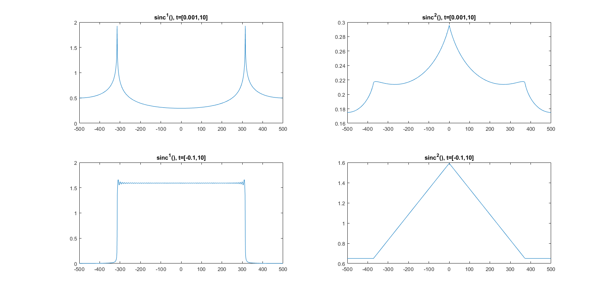
%%Exercise 7.8. Plot the spectrum of w(t) = sin(t) + je^?t. Should you use the % technique of specsin1.m or of specsin2.m? Hint: think symmetry. figure(5) subplot(1,2,2) f=100; Ts=1/1000; time=10.0; % freq , sampling interval, time t=Ts : Ts : time ; % define a time vector w=sin(t) ; % define the sinusoid N=2^10; % size of analyis window ssf=(-N/2:N/2-1)/(Ts*N) ; % frequency vector fw=fft(w( 1 :N) ) ; % do DFT/FFT fws=fftshift( fw ) ; % shiftit for plotting plot ( ssf, abs( fws )) % plot magnitude spectrum title("specsin2 method") subplot(1,2,1) f =100; Ts=1/1000; time =5.0; % freq , sampling interval, time t=Ts:Ts:time ; % define a time vector w=sin(t)+j*exp(-t) ; % define the s inuso id N=2^10; % size of analysis window ssf =(0:N/2-1)/(Ts*N) ; % frequency vector fw=abs(fft(w(1:N))) ; % find magnitude of DFT/FFT plot(ssf, fw(1:N/2)) % plot for positive freq only title("specsin1 method") % it seems to me that because of the imaginary component of the input % signal, its frequency spectrum is not symmetrical about 0Hz, and thus it % makes more sense to plot the spectrum using the technique shown in % specsin2.m, since it shows both the positive and negative frequency % components.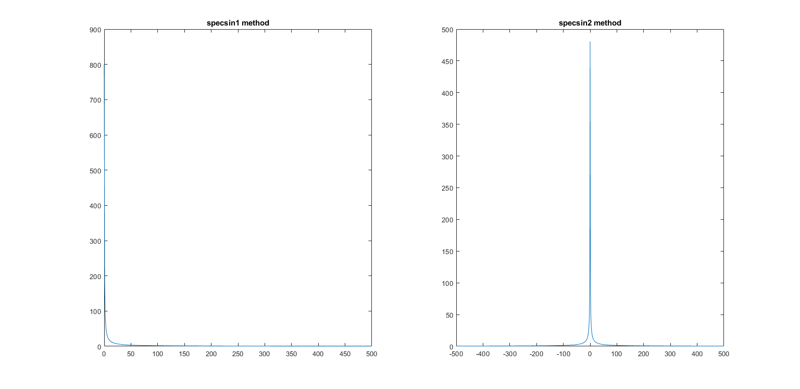
%%Exercise 7.9. The FFT of a real sequence is typically complex, and sometimes % it is important to look at the phase (as well as the magnitude). % a. Let w=sin(2*pi*f*t+phi). For phi = 0, 0.2, 0.4, 0.8, 1.5, 3.14, find the phase of % the FFT output at the frequencies ±f. figure(6) phis = [0, 0.2, 0.4, 0.8, 1.5, 3.14]; for i = 1:length(phis) subplot(2,3,i) phi = phis(i); f=100; Ts=1/1000; time=10.0; % freq , sampling interval, time t=Ts : Ts : time ; % define a time vector w=sin(2*pi*f*t+phi) ; % define the sinusoid N=2^10; % size of analyis window ssf=(-N/2:N/2-1)/(Ts*N) ; % frequency vector fw=fft(w( 1 :N) ) ; % do DFT/FFT fws=fftshift( fw ) ; % shiftit for plotting plot ( ssf, angle( fws )) idxs = [find(abs(ssf+f) == min(abs(ssf+f))), find(abs(ssf-f) == min(abs(ssf-f)))] angles = angle(fws(idxs)); title(sprintf("phase @±100Hz: %0.3f, %0.3f",angles(2),angles(1))) end
idxs = 411 615 idxs = 411 615 idxs = 411 615 idxs = 411 615 idxs = 411 615 idxs = 411 615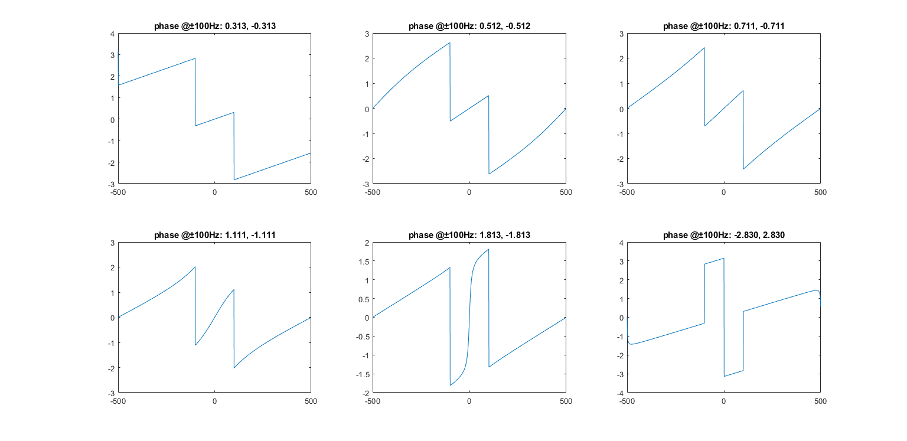
%%b. Find the phase of the output of the FFT when w=sin(2*pi*f*t+phi).ˆ2. figure(7) phis = [0, 0.2, 0.4, 0.8, 1.5, 3.14]; for i = 1:length(phis) subplot(2,3,i) phi = phis(i); f=100; Ts=1/1000; time=10.0; % freq , sampling interval, time t=Ts : Ts : time ; % define a time vector w=sin(2*pi*f*t+phi).^2 ; % define the sinusoid N=2^10; % size of analyis window ssf=(-N/2:N/2-1)/(Ts*N) ; % frequency vector fw=fft(w( 1 :N) ) ; % do DFT/FFT fws=fftshift( fw ) ; % shiftit for plotting plot ( ssf, angle( fws )) idxs = [find(abs(ssf+100) == min(abs(ssf+f))), find(abs(ssf-f) == min(abs(ssf-f)))] angles = angle(fws(idxs)); title(sprintf("phase @±100Hz: %0.3f, %0.3f",angles(2),angles(1))) end
idxs = 411 615 idxs = 411 615 idxs = 411 615 idxs = 411 615 idxs = 411 615 idxs = 411 615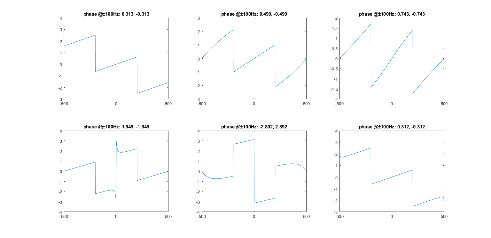
%%Listing 7.4. specgong.m find spectrum of the gong sound filename= 'gong.wav' ; % name of wave file [ x, sr ]= audioread( filename ) ; % read in wavefile Ts=1/sr ; % sample interval & # of samples N=2^15; x=x ( 1 :N)' ; % length for analysis sound(x ,1/Ts ) % play sound ( if possible ) time=Ts * ( 0 : length (x) -1); % time base for plotting subplot (2 , 1 , 1 ) , plot ( time , x) % and plot top figure magx=abs ( fft(x ) ) ; % take FFT magnitude ssf =(0:N/2-1)/(Ts*N) ; % freq base for plotting subplot(2,1,2), plot(ssf,magx(1:N/2)) % plot mag spectrum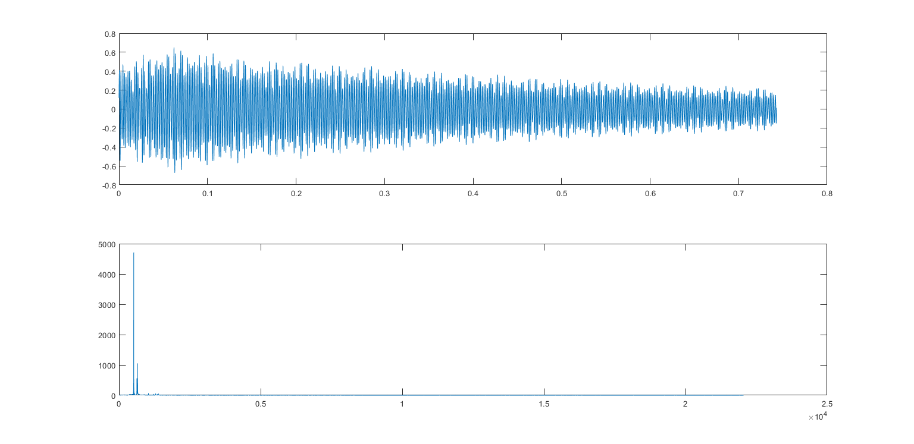
%%Exercise 7.10. Determine the spectrum of the gong sound during the first 0.1 s. % What value of N is needed? Compare this with the spectrum of a 0.1 s segment % chosen from the middle of the sound. How do they differ? figure(8) filename= 'gong.wav' ; % name of wave file [ x, sr ]= audioread( filename ) ; % read in wavefile Ts=1/sr ; % sample interval & # of samples N=0.1/Ts; x=x ( 1 :N)' ; % length for analysis sound(x ,1/Ts ) % play sound ( if possible ) time=Ts * ( 0 : length (x) -1); % time base for plotting subplot (2 , 2 , 1 ) , plot ( time , x) % and plot top figure title("0.1s sample from beginning") magx=abs ( fft(x ) ) ; % take FFT magnitude ssf =(0:N/2-1)/(Ts*N) ; % freq base for plotting subplot(2,2,3), plot(ssf,magx(1:N/2)) % plot mag spectrum title("frequency magnitude") %The number of samples N required to analyze a certain time amount of the %sound is dependant on the sampling frequency, which is 1/Ts. Thus the %value of N required for a 0.1s clip of sound is 0.1/Ts, which in this case %is equal to 4410. %In analyizing the frequency response during the sound's first 0.1s, it is %interesting to note that almost all the frequencies are below about %1400Hz. In addition, the sound is dominated by a tone at 520Hz, as well as %what may be harmonics at around 630Hz and 660Hz. filename= 'gong.wav' ; % name of wave file [ x, sr ]= audioread( filename ) ; % read in wavefile Ts=1/sr ; % sample interval & # of samples N=0.1/Ts; ranger = (1 :N)+round((length(x)/2)) ; x=x ( ranger)' ; % length for analysis sound(x ,1/Ts ) % play sound ( if possible ) time=Ts * ( 0 : length (x) -1); % time base for plotting subplot (2 , 2 , 2) , plot ( time , x) % and plot top figure title("0.1s from middle") magx=abs ( fft(x ) ) ; % take FFT magnitude ssf =(0:N/2-1)/(Ts*N) ; % freq base for plotting subplot(2,2,4), plot(ssf,magx(1:N/2)) % plot mag spectrum title("frequency magnitude") %The sample from the middle of the sound has the same frequency peaks, %although their amplitudes are significantly lower. Inaddition, the peak at %630Hz is now larger than the peak at 660Hz, which is the opposite of what %was the case at the beginning of the sound.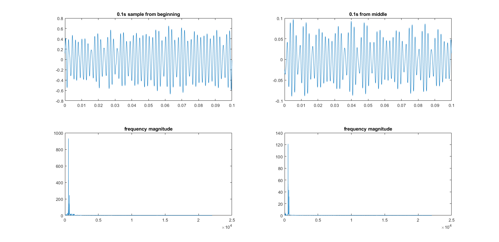
%%Exercise 7.11. A common practice when taking FFTs is to plot the magnitude % on a log scale. This can be done in Matlab by replacing the plot command % with semilogy. Try it in specgong.m. What extra details can you see? figure(9) filename= 'gong.wav' ; % name of wave file [ x, sr ]= audioread( filename ) ; % read in wavefile Ts=1/sr ; % sample interval & # of samples N=2^15; x=x ( 1 :N)' ; % length for analysis sound(x ,1/Ts ) % play sound ( if possible ) time=Ts * ( 0 : length (x) -1); % time base for plotting subplot (2 , 1 , 1 ) , plot ( time , x) % and plot top figure magx=abs ( fft(x ) ) ; % take FFT magnitude ssf =(0:N/2-1)/(Ts*N) ; % freq base for plotting subplot(2,1,2), semilogy(ssf,magx(1:N/2)) % plot mag spectrum %plotting the frequency response with a log scale reveals repeating higher %freuquency components that get lost in the noise when only a simple %magnitude is plotted. These frequency components could be the result of %aliasing, but are more likely to be harmonics of the gong's fundamental %tones.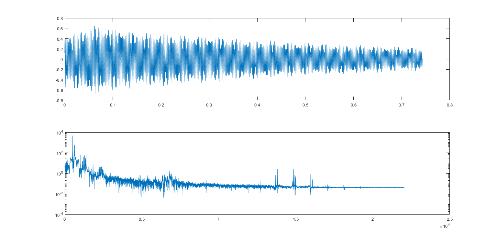
%%Exercise 7.12. The waveform of the sound produced by another, much larger % gong is given in gong2.wav on the website. Conduct a thorough analysis of this % sound, looking at the spectrum for a variety of analysis windows (values of N) % and at a variety of times within the waveform. figure(10) locations = ["beginning", "middle", "end"]; for i = 1:3 filename= 'gong2.wav' ; % name of wave file [ x, sr ]= audioread( filename ) ; % read in wavefile Ts=1/sr ; % sample interval & # of samples N=0.1/Ts; x=x ( (1:N)+round((length(x)/3)*(i-1)))' ; % length for analysis sound(x ,1/Ts ) % play sound ( if possible ) time=Ts * ( 0 : length (x) -1); % time base for plotting subplot (2, 3 , i ) , plot ( time , x) % and plot top figure title(sprintf("0.1s sample from %s",locations(i))) magx=abs ( fft(x ) ) ; % take FFT magnitude ssf =(0:N/2-1)/(Ts*N) ; % freq base for plotting subplot(2,3,3+i), semilogx(ssf,magx(1:N/2)) % plot mag spectrum title("frequency magnitude") end figure(11) windows = [0.1,0.3,0.5,1]; for i = 1:4 filename= 'gong2.wav' ; % name of wave file [ x, sr ]= audioread( filename ) ; % read in wavefile Ts=1/sr ; % sample interval & # of samples N=windows(i)/Ts; x=x ( (1:N))' ; % length for analysis sound(x ,1/Ts ) % play sound ( if possible ) time=Ts * ( 0 : length (x) -1); % time base for plotting subplot (2, 4 , i ) , plot ( time , x) % and plot top figure title(sprintf("%0.2fs sample from beginning",windows(i))) magx=abs ( fft(x ) ) ; % take FFT magnitude ssf =(0:N/2-1)/(Ts*N) ; % freq base for plotting subplot(2,4,4+i), semilogx(ssf,magx(1:N/2)) % plot mag spectrum title("frequency magnitude") end %the main difference between this sound and the previous one is that the %frequency peaks are at much lower frequencies than with the smaller gong, %with the fundamental tone being at 80Hz. In addition, more frequency peaks %are visible. Looking at the signal at different times reveals that these %frequency peaks change in relative magnitude over time, meaning that some %harmonics are decaying faster than others. Finally, I observed that %sampling over a longer time span resulted in similar changes to the the %frequency peaks as sampling at different times, as well as increasing the %magnitude of all peaks when the sample had a longer window, probably as a %result of the increased energy transmitted over the longer window.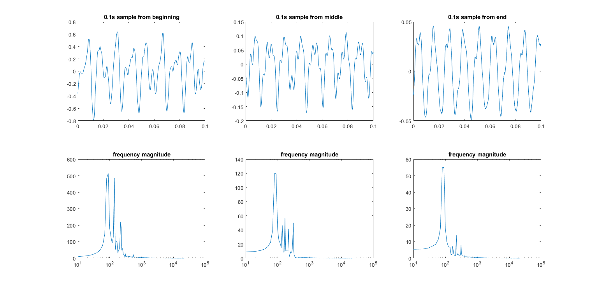 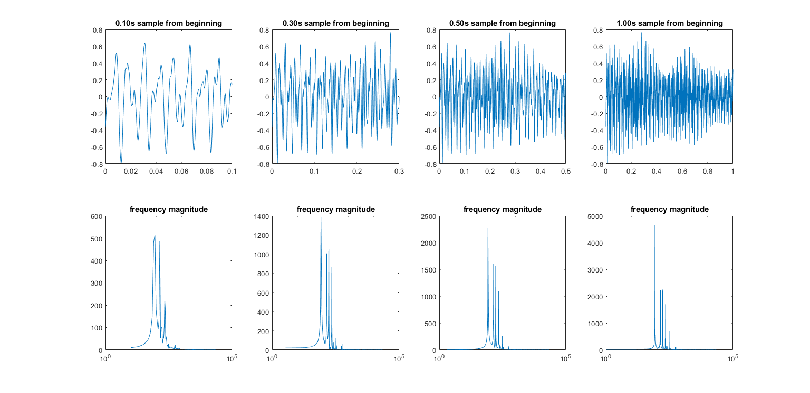
%%Exercise 7.13. Choose a .wav file from the website (in the Sounds folder) or % download a .wav file of a song from the Internet. Conduct a FFT analysis of the % first few seconds of sound, and then another analysis in the middle of the song. figure(12) locations = ["beginning", "middle", ]; for i = 1:2 filename= 'im_a_pepper2.wav' ; % name of wave file [ x, sr ]= audioread( filename ) ; % read in wavefile Ts=1/sr ; % sample interval & # of samples N=2/Ts; x=x ( (1:N)+round((length(x)/2) *(i-1)))' ; % length for analysis sound(x ,1/Ts ) % play sound ( if possible ) time=Ts * ( 0 : length (x) -1); % time base for plotting subplot (2, 2 , i ) , plot ( time , x) % and plot top figure title(sprintf("2s sample from %s",locations(i))) magx=abs ( fft(x ) ) ; % take FFT magnitude ssf =(0:N/2-1)/(Ts*N) ; % freq base for plotting subplot(2,2,2+i), semilogx(ssf,magx(1:N/2)) % plot mag spectrum title("frequency magnitude") end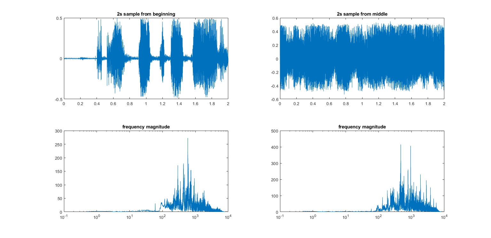
%%Listing 7.5. waystofilt.m “conv” vs. “filter” vs. “freq domain” vs. “time domain” h=[1 -1 2 -2 3 -3]; % impulse response h[ k ] x=[1 2 3 4 5 6 -5 -4 -3 -2 -1]; % input data x [ k ] yconv=conv(h , x) % convolve x[k]* h [ k ] yfilt=filter(h , 1 , x) % filterx[ k ] with h[ k ] n=length (h)+length (x)-1; % pad l eng th f o r FFT ffth=fft([h, zeros(1,n-length(h))]) ; % FFT o f h [ k ] i s H[ n ] fftx=fft([x, zeros(1,n-length(x))]) ; % FFT of input i s X[ n ] ffty=ffth.*fftx ; % product of H[ n ] and X[ n ] yfreq=real ( ifft(ffty )) % IFFT of product give s y [ k ] z=[zeros(1, length (h)-1) ,x] ; % initial filter state=0 for k=1: length (x) % time?domain method ytim(k)=fliplr(h)* z (k : k+length (h) -1)' ; % do f o r each x [ k ] end % to directly calculate y [ k ]
yconv =
Columns 1 through 13
1 1 3 3 6 6 -6 6 -18 6 -30 6 5
Columns 14 through 16
5 3 3
yfilt =
1 1 3 3 6 6 -6 6 -18 6 -30
yfreq =
Columns 1 through 7
1.0000 1.0000 3.0000 3.0000 6.0000 6.0000 -6.0000
Columns 8 through 14
6.0000 -18.0000 6.0000 -30.0000 6.0000 5.0000 5.0000
Columns 15 through 16
3.0000 3.0000
%%Listing 7.6. waystofiltIIR.m ways to implement IIR filters a=[1 -0. 8] ; lena=length(a)-1; % autoregressive coefficients b=[1] ; lenb=length (b ) ; % moving average coefficients d=randn( 1 , 20) ; % data to filter if lena>=lenb % dimpulse needs lena>=lenb h=impz (b , a ) ; % impulse response of filter yfilt=filter(h , 1 , d) % filter x[ k ] with h[ k ] end yfilt2=filter(b , a , d) % filter using a and b y=zeros (lena,1); x=zeros ( lenb , 1 ) ; % initial states in filter for k=1: length (d)-lenb % time?domain method x=[d(k) ; x(1:lenb-1)] ; % past values of inputs ytim(k)=-a(2: lena+1)*y+b*x ; % directly calculate y[ k ] y=[ytim(k); y(1:lena -1)] ; % past values of outputs end
yfilt =
1.0e+05 *
Columns 1 through 7
0.0000 -0.0000 -0.0001 0.0000 0.0008 -0.0000 -0.0068
Columns 8 through 14
0.0003 0.0541 -0.0026 -0.4325 0.0205 3.4598 -0.1637
Columns 15 through 20
0.0958 -3.1608 -3.5870 0.7216 -0.3548 0.7393
yfilt2 =
1.0e+08 *
Columns 1 through 7
0.0000 -0.0000 -0.0000 0.0000 0.0000 -0.0000 -0.0000
Columns 8 through 14
0.0000 0.0001 -0.0000 -0.0004 0.0000 0.0035 -0.0002
Columns 15 through 20
-0.0277 0.0013 0.2214 -0.0105 -1.7714 0.0838
%%Exercise 7.15. FIR filters can be used to approximate the behavior of IIR filters % by truncating the impulse response. Create a FIR filter with impulse response % given by the first 10 terms of (7.9) for a = 0.9 and b = 2. Simulate the FIR filter % and the IIR filter (7.8) in Matlab, using the same random input to both. Verify % that the outputs are (approximately) the same. h_FIR = [1,2,3,4,5,6,7,8,9,10]; a=0.9; b=2; for k = 1:length(terms) h_FIR(k) = (a*b^k); end x = randn(1,21) %FIR filter yfilt_FIR=filter(h, 1, x) % filter x[ k ] with h[ k ] %IIR filter h_IIR = impz (b, a); yfilt_IIR=filter(h, 1, x) figure(12) subplot(3,1,1); plot(0:length(x)-1,abs(fftshift(fft(x)))); title("fft(x)") subplot(3,1,2); plot(0:length(x)-1,abs(fftshift(fft(yfilt_FIR)))); title("fft(y\_FIR)") subplot(3,1,3); plot(0:length(x)-1,abs(fftshift(fft(yfilt_IIR)))); title("fft(y\_IIR)")
x =
Columns 1 through 7
0.0596 -0.4113 -0.3680 -1.3610 0.7796 0.4394 -0.0896
Columns 8 through 14
1.0212 -0.8740 0.4147 0.3484 0.3493 -0.7292 0.3268
Columns 15 through 21
-0.5149 -0.8964 -1.2033 1.0378 -0.8459 -0.1729 -1.2087
yfilt_FIR =
1.0e+05 *
Columns 1 through 7
0.0000 -0.0000 -0.0000 0.0000 0.0001 -0.0001 -0.0006
Columns 8 through 14
0.0012 0.0048 -0.0097 -0.0386 0.0774 0.3085 -0.6191
Columns 15 through 21
-1.2191 -3.6718 2.0349 0.8328 0.0692 2.5530 -2.4332
yfilt_IIR =
1.0e+05 *
Columns 1 through 7
0.0000 -0.0000 -0.0000 0.0000 0.0001 -0.0001 -0.0006
Columns 8 through 14
0.0012 0.0048 -0.0097 -0.0386 0.0774 0.3085 -0.6191
Columns 15 through 21
-1.2191 -3.6718 2.0349 0.8328 0.0692 2.5530 -2.4332
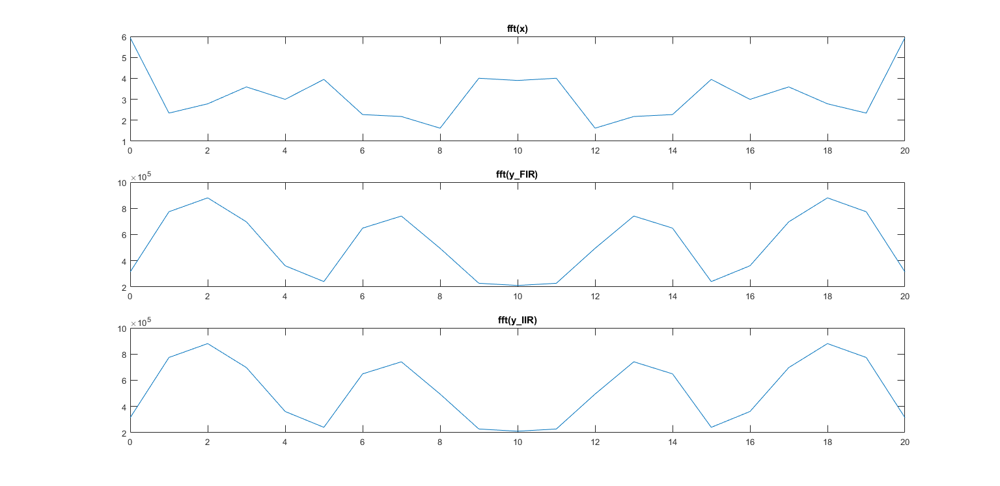 %%Listing 7.7. bandex.m design a bandpass filter and plot frequency response fbe=[0 0.24 0.26 0.74 0.76 1 ] ; % freq band edges as a fraction of % the Nyquist f requency damps=[0 0 1 1 0 0]; % desired amplitudes at band edges fl =30; % filter size b=firpm( fl, fbe, damps ) ; % b is the designed impulse response figure (13) freqz(b) % plot freq response to check design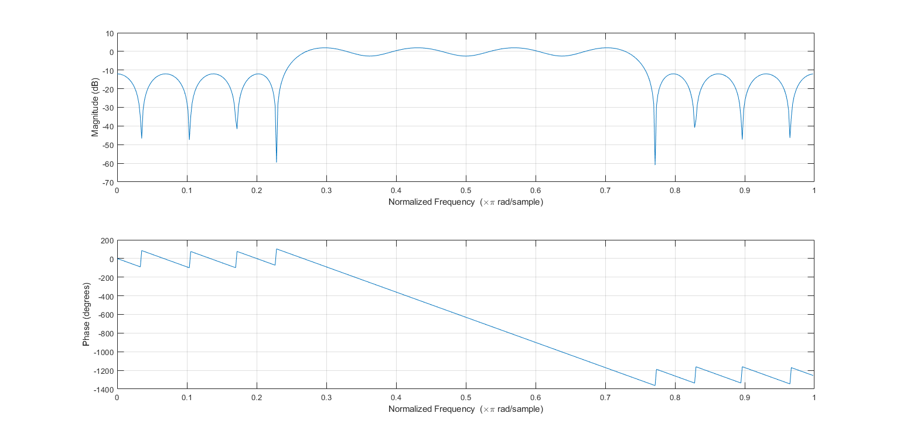